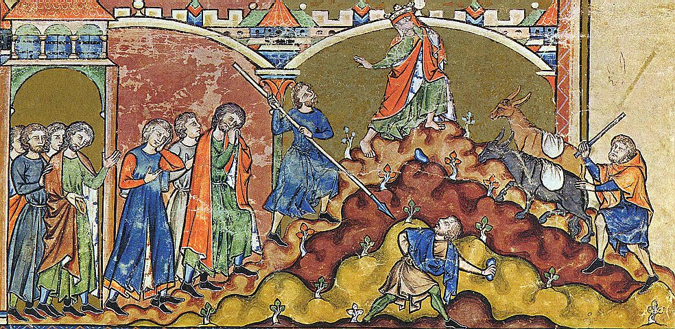

2 Samuel 15 — La Traducción Mister

2 Samuel 15. El título del catálogo es «David huye de Jerusalén tras la conspiración de Absalón», y los pies descalzos de la figura coronada son los del versículo 30. El hombre que lanza la piedra y el que lleva la lanza pertenecen al capítulo siguiente (16:6–9), donde Simei maldice a David en el camino; el iluminador ha puesto la huida y la maldición en una sola página.

Notas del traductor — versículo por versículo
Un carro y cincuenta corredores. «Absalón se hizo un carro y caballos, y cincuenta hombres que corrieran delante de él»: «cincuenta hombres que corran delante de él» está en dos versículos, este y 1 Reyes 1:5 (ya en estas páginas), donde Adonías hijo de Haguit hace lo mismo, habiendo dicho «Yo reinaré». Es lo que Samuel dijo a Israel que haría un rey, tomar hijos para que corran «delante de su carro» (1 Samuel 8:11, ya en estas páginas), y la palabra para los corredores, ratsim, es la palabra para la guardia del rey en 1 Samuel 22:17 (ya en estas páginas). El hebreo tiene el singular merkavá, «un carro». La RV 1909 dice «carros y caballos». La NVI dice «carros de combate». La TNM 1987 dice «mandó a hacerse un carro». La misma NVI dice «una escolta de cincuenta soldados», donde el hebreo dice hombres que corren.
El camino de la puerta. «Y Absalón se levantó temprano y se puso al lado del camino de la puerta»: la puerta es donde se oían los casos, y la viuda de Deuteronomio 25:7 (ya en estas páginas) sube a la puerta ante los ancianos. La RV 1909 dice «á un lado del camino de la puerta». La NVI dice «a la vera del camino, junto a la entrada de la ciudad». La TNM 1987 dice «al lado del camino [que conducía] a la puerta». Absalón pregunta «¿De qué ciudad eres?» y el hombre responde con una tribu; la pregunta es la misma para todos, y también lo que Absalón dice después.
Quien te oiga, no lo tienes. «Mira, tus palabras son buenas y rectas; pero quien te escuche de parte del rey, no lo tienes»: «quien te oiga, no lo tienes» está en un versículo, y la palabra para el que falta, shomea, es un oidor de casos. La RV 1909 dice «mas no tienes quien te oiga por el rey». La NVI dice «no habrá quien te escuche de parte del rey». La TNM 1987 dice «que te dé audiencia». De David el libro había dicho que hacía «juicio y justicia a todo su pueblo» (2 Samuel 8:15, ya en estas páginas), y la oferta de Absalón en el versículo 4 usa la misma raíz de la justicia.
Quién me pondrá por juez. «¿Quién me pondrá por juez en la tierra? Entonces vendría a mí todo hombre que tenga un pleito o una causa, y yo le daría la razón»: el hebreo es una pregunta, mi yesiméni shofet, y las versiones la vuelven un deseo. La RV 1909 dice «Quién me pusiera por juez en la tierra». La TNM 1987 dice «¡Oh, que yo fuera nombrado juez en el país». La NVI dice «¡Ojalá me pusieran por juez en el país!». El último verbo, vehitsdaqtív, es «le daría la razón», de la raíz de tsédeq. La RV 1909 dice «yo les haría justicia». La TNM 1987 dice «Entonces ciertamente le haría justicia».
Lo besaba. «Extendía su mano y lo sujetaba, y lo besaba»: «lo sujetaba, y lo besaba» está en un versículo. El beso es el que el propio Absalón recibió al final del capítulo anterior, cuando «el rey besó a Absalón» (2 Samuel 14:33, ya en estas páginas). La NVI dice «lo abrazaba y lo saludaba con un beso», donde el hebreo tiene el beso y no el abrazo. La TNM 1987 dice «lo asía y lo besaba».
Robó el corazón. «Y Absalón robó el corazón de los hombres de Israel»: «robó», dicho de un corazón, está en dos versículos, este y Génesis 31:20 (ya en estas páginas), donde Jacob «robó el corazón de Labán el arameo» al irse sin avisarle. El hebreo tiene aquí el singular «corazón», y también en el versículo 13: el corazón de un pueblo tomado como uno solo. La RV 1909 dice «robaba Absalom el corazón de los de Israel». La TNM 1987 dice «siguió robándose el corazón de los hombres de Israel». La NVI dice «ganándose el cariño del pueblo». El griego tiene idiopoieito, «hacía suyo».
Cuarenta años. «Y fue al cabo de cuarenta años que Absalón dijo al rey»: el hebreo tiene arba‘ím shaná, «cuarenta años», y el griego de Rahlfs tiene lo mismo, tesserakonta etōn. Nada en el capítulo permite contar cuarenta años atrás: Absalón pasó tres años en Guesur (2 Samuel 13:38) y dos años completos en Jerusalén (14:28), ambos ya en estas páginas, y todo el reinado de David fue de cuarenta años (2 Samuel 5:4, ya en estas páginas). La NVI dice «Al cabo de cuatro años». La RV 1909 dice «Y al cabo de cuarenta años». La TNM 1987 dice «Y al cabo de cuarenta años». Yo traduzco el número que dan el hebreo y el griego y no lo corrijo.
Ciertamente me hace volver. «Déjame ir, por favor, y pagar mi voto que hice a Jehová, en Hebrón. Porque tu siervo hizo un voto mientras yo habitaba en Guesur, en Aram»: el texto escrito del versículo 8 tiene yashiv y la tradición de lectura tiene yashov, las dos del verbo «volver», así que el sentido es el mismo. El voto es «entonces serviré a Jehová», y el hebreo del versículo 8 no dice «en Hebrón» ni «sacrificio». La NVI dice «le ofreceré un sacrificio». La RV 1909 dice «yo serviré á Jehová». La TNM 1987 dice «entonces tendré que rendir servicio a Jehová». Para Guesur la RV 1909 dice «Gessur en Siria», y la NVI dice «Guesur de Aram». El griego tiene Syria. Hebrón es donde los hombres de Judá ungieron a David (2 Samuel 2:4), donde nació Absalón (3:3) y donde todas las tribus ungieron otra vez a David (5:3), todos ya en estas páginas.
El sonido del cuerno. «Cuando oigan el sonido del cuerno, entonces dirán: “Absalón ha llegado a ser rey en Hebrón”»: el instrumento es el shofar, un cuerno de carnero, y el grito es el que el propio David ordena para Salomón (1 Reyes 1:34, ya en estas páginas). La NVI dice «el toque de trompeta». La RV 1909 dice «el sonido de la trompeta». La TNM 1987 dice «el sonido del cuerno». Para el grito la RV 1909 dice «Absalom reina en Hebrón». La TNM 1987 dice «ha llegado a ser rey en Hebrón». Los espías, meraggelím, son «hombres de a pie», de réguel, «pie». La NVI dice «mensajeros».
En su integridad. «Doscientos hombres de Jerusalén, invitados, e iban en su integridad; y no sabían nada»: letummám viene de tom, «plenitud, integridad». La RV 1909 dice «en su sencillez». La NVI dice «de buena fe». La TNM 1987 dice «sin tener sospecha alguna». El texto dice lo que sabían y no dice lo que pensaron cuando sonó el cuerno.
Ahitofel de Gilo. «Absalón mandó llamar a Ahitofel el gilonita, consejero de David, de su ciudad, de Gilo»: Gilo es un pueblo de la sierra de Judá (Josué 15:51, ya en estas páginas). El griego de Rahlfs lo llama ton Gelmōnaion y al pueblo Gōla. La Betsabé de 2 Samuel 11:3 (ya en estas páginas) es hija de un Eliam, y un Eliam aparece como hijo de Ahitofel el gilonita en 2 Samuel 23:34; el texto no dice que sean el mismo hombre. La palabra hebrea para el complot es qésher, «conspiración». La RV 1909 dice «la conjuración vino á ser grande». La NVI dice «la conspiración fue tomando fuerza». La TNM 1987 dice «la conspiración siguió haciéndose más fuerte». La RV 1909 dice «se iba aumentando el pueblo con Absalom».
El corazón del hombre de Israel. «El corazón del hombre de Israel ha estado tras Absalón»: el hebreo es singular, lev ish yisrael, como en el versículo 6, y aquí es el informe del mensajero a David. La TNM 1987 dice «El corazón de los hombres de Israel ha llegado a estar tras Absalón». La RV 1909 dice «El corazón de todo Israel va tras Absalom». La NVI dice «se han puesto de parte de Absalón».
Huyamos. «Levántense, y huyamos»: nivrajá, el verbo de la huida de David ante Saúl (1 Samuel 19:12 y 20:1, ya en estas páginas), dicho ahora a sus propios siervos acerca de su propio hijo. Su razón es que «no habrá escape para nosotros», peleitá, y el mal que teme es que Absalón «haga caer el mal sobre nosotros»: vehidíaj viene de la raíz nadaj, el verbo del hijo desterrado de 2 Samuel 14:13–14 (ya en estas páginas). La TNM 1987 dice «no tendremos escape». La NVI dice «nos traerá la ruina». La RV 1909 dice «arroje el mal sobre nosotros». Se va para que la ciudad no sea herida «a filo de espada». La RV 1909 dice «hiera la ciudad á filo de espada». La NVI dice «pasará a toda la gente a filo de espada».
Diez concubinas. «Y el rey dejó diez mujeres, concubinas, para guardar la casa»: «diez mujeres, concubinas» está en dos versículos, este y 2 Samuel 20:3. El hebreo las llama pilagshím, que no es «esposas». La RV 1909 dice «diez mujeres concubinas». La NVI dice «diez concubinas». La TNM 1987 dice «diez mujeres, concubinas». La casa sale beraglav, «a sus pies». La TNM 1987 dice «con toda su casa a sus pies». La RV 1909 dice «con toda su familia en pos de él». La NVI dice «acompañado de toda la corte».
La Casa Lejana. «Y se detuvieron en Bet-merhak»: «Bet-merhak» está en un versículo. El nombre lleva el artículo en el hebreo y significa «la casa lejana», y el versículo no dice dónde estaba. La TNM 1987 dice «Bet-merhaq». La RV 1909 dice «en un lugar distante». La NVI dice «la casa más lejana de la ciudad».
Seiscientos geteos. «Todos los cereteos y todos los peleteos; y todos los geteos, seiscientos hombres que habían venido a sus pies desde Gat, iban pasando delante del rey»: los cereteos y peleteos son la guardia de David (2 Samuel 8:18, ya en estas páginas). El número seiscientos es la banda de David en Siclag (1 Samuel 30:9, ya en estas páginas), y seiscientos hombres pasaron con él a Aquís rey de Gat (1 Samuel 27:2, ya en estas páginas); el versículo no dice que sean los mismos hombres. La RV 1909 dice «seiscientos hombres que habían venido á pie desde Gath». La NVI dice «que lo habían seguido desde Gat». El griego de Rahlfs añade que «se detuvieron junto al olivo en el desierto», epi tēs elaias en tē erēmō.
Un extranjero y un desterrado. «Vuelve y quédate con el rey, porque eres extranjero, y además desterrado de tu lugar»: nokhrí es «extranjero» y golé «uno en exilio». El hebreo dice solo «el rey». La NVI dice «quédate con el rey Absalón». La TNM 1987 dice «eres un extranjero y, además, te hallas desterrado de tu lugar». La RV 1909 dice «tú eres extranjero, y desterrado también de tu lugar». «Itai el geteo» está en tres versículos: los versículos 19 y 22, y 2 Samuel 18:2, donde David lo pone al frente de un tercio del ejército. Gat es el pueblo de Goliat (1 Samuel 17:4, ya en estas páginas).
Andar errante. «Ayer viniste, ¿y hoy te haré andar errante con nosotros, para ir yo adonde voy?»: el texto escrito del versículo 20 tiene anu‘ajá y la tradición de lectura tiene ani‘ajá, las dos del verbo de moverse de un lado a otro, así que el sentido es el mismo. La RV 1909 dice «téngote de hacer hoy que mudes lugar para ir con nosotros». La TNM 1987 dice «te haré andar errante con nosotros». La NVI dice «ni yo mismo sé a dónde vamos». El hebreo para adónde va es solo «voy sobre lo que voy». La RV 1909 dice «Yo voy como voy».
Con bondad y verdad. «Vuelve, y lleva de regreso a tus hermanos contigo, con bondad y verdad»: jésed ve’emét no tiene verbo en el hebreo, y David usó el mismo par con los hombres de Jabes de Galaad (2 Samuel 2:6, ya en estas páginas). Las versiones añaden uno. La NVI dice «¡Y que el amor y la fidelidad de Dios te acompañen!». La RV 1909 dice «en ti haya misericordia y verdad». La TNM 1987 dice «[y ejerza Jehová para contigo]» entre corchetes. El griego tiene verbo y sujeto: kai kyrios poiēsei meta sou eleos kai alētheian, «y el Señor hará contigo misericordia y verdad».
Para muerte o para vida. «Vive Jehová, y vive mi señor el rey, que en el lugar donde esté mi señor el rey, sea para muerte o para vida, allí estará tu siervo»: el orden en el hebreo es primero la muerte. La TNM 1987 dice «sea para muerte o para vida». La NVI dice «para vida o para muerte». La RV 1909 dice «ó para muerte ó para vida». Una extranjera que sigue hacia lo desconocido es Rut en Rut 1:16–17 (ya en estas páginas), e Itai jura por Jehová como ella.
Toda la tierra llorando. «Y toda la tierra lloraba a gran voz, y todo el pueblo iba pasando; y el rey pasaba el torrente de Cedrón»: el verbo avar, «pasar», recorre los versículos 18 a 24. La RV 1909 dice «Y todo el país lloró en alta voz». La NVI dice «Todo el pueblo lloraba a gritos». La TNM 1987 dice «el rey estaba parado junto al valle torrencial de Cedrón», donde el hebreo lo tiene cruzando. Jesús sale al otro lado del mismo valle la noche en que es arrestado (Juan 18:1, ya en estas páginas).
El arca asentada. «Sadoc también, y todos los levitas con él, llevando el arca del pacto de Dios; y asentaron el arca de Dios, y Abiatar subió»: el hebreo dice que Abiatar «subió». La RV 1909 dice «Y subió Abiathar». La NVI dice «Abiatar ofreció sacrificios». La TNM 1987 dice «junto a Abiatar». El griego de Rahlfs tiene el arca «del pacto del Señor», diathēkēs kyriou, y añade apo Baithar, «de Betar», después de ella.
Su morada. «Haz volver el arca de Dios a la ciudad. Si hallo gracia ante los ojos de Jehová, él me hará volver, y me dejará verla a ella y su morada»: navehu es la palabra de Éxodo 15:13 (ya en estas páginas), «tu santa morada». David devuelve el arca que Israel una vez trajo para ser salvado por ella (1 Samuel 4:3) y que él mismo subió a Jerusalén (2 Samuel 6:17), ambos ya en estas páginas. La RV 1909 dice «á su tabernáculo». La NVI dice «el lugar donde él reside». La TNM 1987 dice «su lugar de habitación». El rechazo que admite, «No me complazco en ti», va seguido de «que haga conmigo como le parezca bien», cercano al «haga lo que bien le parezca» de Elí (1 Samuel 3:18, ya en estas páginas) pero no idéntico.
¿Eres tú vidente? «¿Eres tú vidente? Vuelve a la ciudad en paz»: el hebreo es haro’é attá, y ro’é es la palabra antigua para un profeta. La RV 1909 dice «¿No eres tú el vidente?». La TNM 1987 dice «Eres vidente, ¿verdad?». La NVI dice «Como tú eres vidente». El griego tiene idete sy epistrepheis, «miren, tú vuelves», un imperativo donde el hebreo tiene la pregunta.
Las llanuras del desierto. «Miren, yo me demoro en las llanuras del desierto hasta que venga palabra de parte de ustedes para avisarme»: el texto escrito tiene ba‘avrót, «en los vados», y la tradición de lectura tiene ba‘arvót, «en las llanuras», y yo traduzco la lectura vocalizada. Arvot es la palabra para las llanuras de Jericó (Josué 4:13 y 5:10, ya en estas páginas). La TNM 1987 dice «junto a los vados del desierto». La NVI dice «las llanuras del desierto». La RV 1909 dice «los campos del desierto». El griego de Rahlfs tiene en Arabōth, «en Arabot».
La cuesta de los Olivos. «Y David subía por la cuesta de los Olivos, subiendo y llorando, con la cabeza cubierta, e iba descalzo»: «la cuesta de los Olivos» está en un versículo, y el hebreo no dice «monte». La TNM 1987 dice «la cuesta de los Olivos». La RV 1909 dice «la cuesta de las olivas». La NVI dice «monte de los Olivos». La cabeza cubierta y los pies descalzos son las señales del duelo, y el pueblo con él hace lo primero. La RV 1909 dice «llevando la cabeza cubierta, y los pies descalzos». El monte de los Olivos es donde estarán los pies de Jehová en Zacarías 14:4.
Entontece. «Haz necio, por favor, el consejo de Ahitofel, oh Jehová»: sakkél es de la raíz del «he actuado como necio» de Saúl (1 Samuel 26:21) y del «has obrado neciamente» de Samuel (13:13), ambos ya en estas páginas. La RV 1909 dice «Entontece ahora, oh Jehová, el consejo de Achitophel». La TNM 1987 dice «Vuelve, por favor, en tontedad el consejo de Ahitofel». La NVI dice «que fracasen los planes de Ajitofel». El griego tiene diaskedason, «dispersa», y kyrie ho theos mou, «oh Señor, Dios mío». El hebreo vocalizado tiene un verbo activo, higgíd, «Y David avisó, diciendo», y las versiones del estante lo leen como pasivo. El griego tiene anēngelē, «se informó», y la oración se contesta en los versículos que siguen, por el hombre que espera en la cumbre.
Donde se adoraba a Dios. «David llegó a la cumbre, donde se adoraba a Dios»: ad-harósh, «hasta la cabeza». La RV 1909 dice «para adorar allí á Dios». La NVI dice «donde se adoraba a Dios». La TNM 1987 dice «donde la gente solía inclinarse ante Dios». El griego de Rahlfs tiene Rhōs, un nombre.
Tierra sobre la cabeza. «Husai el arquita, rasgada su túnica, y tierra sobre su cabeza»: «tierra sobre su cabeza» está en tres versículos: el benjaminita que trae noticias de la batalla a Silo (1 Samuel 4:12), el hombre del campamento de Saúl (2 Samuel 1:2), ambos ya en estas páginas, y este. «rasgada su túnica» está en un versículo. La RV 1909 dice «trayendo rota su ropa, y tierra sobre su cabeza». La NVI dice «las vestiduras rasgadas y la cabeza cubierta de tierra». La TNM 1987 dice «con su traje talar rasgado y tierra sobre la cabeza». La RV 1909 dice «Arachîta», la NVI dice «el arquita» y la TNM 1987 dice «el arkita». Los arquitas están en la frontera de la tierra de José (Josué 16:2, ya en estas páginas).
Una carga, y un consejo que deshacer. «Si pasas conmigo, serás una carga para mí»: masá. La RV 1909 dice «serme has de carga». La TNM 1987 dice «una carga sobre mí». «Entonces desharás para mí el consejo de Ahitofel»: el verbo hebreo es hefér, «anular, romper». La NVI dice «desbaratar los planes de Ajitofel». La RV 1909 dice «me disiparás el consejo de Achitophel». La TNM 1987 dice «me tendrás que frustrar el consejo de Ahitofel». Las palabras que David le da, «Tu siervo soy, oh rey», no nombran a ningún rey; «siervo de tu padre» es lo que las apunta hacia Absalón.
Dos hijos, y un amigo. «Mira, allí están con ellos sus dos hijos, Ahimaas el de Sadoc y Jonatán el de Abiatar; y enviarán por su mano a mí toda palabra que oigan»: los dos hijos son los que ya estaban en el plan del rey en el versículo 27. «Y Husai, amigo de David, llegó a la ciudad; y Absalón venía entrando a Jerusalén.» La NVI dice «amigo de David». La TNM 1987 dice «compañero de David». La NVI dice «en el momento en que Absalón entraba en la ciudad». La TNM 1987 dice «procedió a entrar en Jerusalén». El griego tiene a Husai ho hetairos Dauid ya en el versículo 32.
Patrones que vale la pena llevar adelante
Donde esta traducción mantiene las palabras exactas y distintas: «robó el corazón», en singular, como lo tiene el hebreo; «quien te oiga, no lo tienes»; «le daría la razón»; «el cuerno» para shofar; «en su integridad»; «la conspiración»; «a sus pies»; «diez mujeres, concubinas»; «Bet-merhak»; «un extranjero» y «un desterrado»; «con bondad y verdad»; «¿Eres tú vidente?»; «la cuesta de los Olivos»; «haz necio»; «tierra sobre su cabeza»; y las lecturas vocalizadas «andar errante» y «en las llanuras del desierto», con las formas escritas en las notas.
Ecos pagados. Los cincuenta corredores de Adonías (1 Reyes 1:5); el rey que toma hijos para que corran delante de su carro (1 Samuel 8:11); los corredores del rey (1 Samuel 22:17); la puerta y los ancianos (Deuteronomio 25:7); el juicio y la justicia de David (2 Samuel 8:15); el beso del rey (2 Samuel 14:33); Jacob robando el corazón de Labán (Génesis 31:20); Hebrón, donde David fue ungido dos veces y nació Absalón (2 Samuel 2:4; 3:3; 5:3); el cuerno y el grito por Salomón (1 Reyes 1:34); Gilo (Josué 15:51); Betsabé, hija de Eliam (2 Samuel 11:3); la huida de David ante Saúl (1 Samuel 19:12; 20:1); la raíz del hijo desterrado (2 Samuel 14:13–14); los cereteos y peleteos (2 Samuel 8:18); seiscientos hombres (1 Samuel 27:2; 30:9); el Gat de Goliat (1 Samuel 17:4); «bondad y verdad» para Jabes de Galaad (2 Samuel 2:6); el juramento de Rut (Rut 1:16–17); el Cedrón la noche del arresto (Juan 18:1); la santa morada (Éxodo 15:13); el arca tomada como amuleto y subida a Jerusalén (1 Samuel 4:3; 2 Samuel 6:17); el «lo que bien le parezca» de Elí (1 Samuel 3:18); las llanuras de Jericó (Josué 4:13; 5:10); el necio en Saúl y Samuel (1 Samuel 26:21; 13:13); la tierra sobre la cabeza (1 Samuel 4:12; 2 Samuel 1:2); y los arquitas (Josué 16:2).
Ecos plantados. Los asnos de Siba y las piedras de Simei (2 Samuel 16:1, 5, ya en estas páginas); el «Viva el rey» de Husai y el consejo de entrar a las concubinas (2 Samuel 16:16, 21, ya en estas páginas); Jehová ordenando que se deshiciera el consejo de Ahitofel, y los dos hijos en el pozo (2 Samuel 17:14, 17, ya en estas páginas); el ejército repartido en tres partes bajo Itai (2 Samuel 18:2); las diez mujeres encerradas (2 Samuel 20:3); Eliam hijo de Ahitofel (2 Samuel 23:34); el encabezado del Salmo 3; Husai el amigo del rey (1 Crónicas 27:33); y los pies sobre el monte de los Olivos (Zacarías 14:4). Ninguno de los demás está todavía en estas páginas.
Siguiente en este libro: 2 Samuel 16 — Siba sale al encuentro de David con asnos, pan y vino y dice que Mefiboset se queda en Jerusalén; Simei hijo de Gera maldice a David y le arroja piedras; Husai dice «Viva el rey» a Absalón; Ahitofel dice a Absalón que entre a las concubinas de su padre, y le extienden una tienda en el terrado.